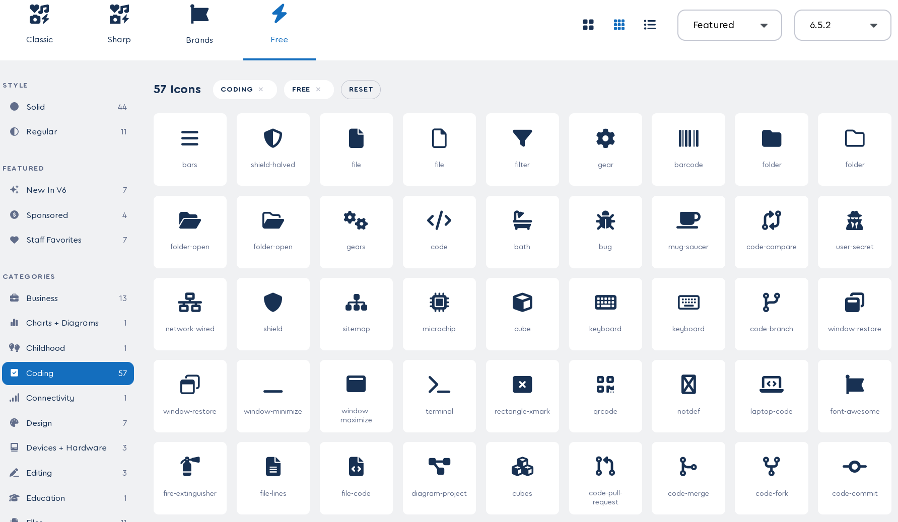

Nota: pulsa en la pregunta para ver la respuesta
o sobre una imagen para ampliarla (o devolverla a su tamaño original).
"Preguntas", "¡Disfruta! ☕"
¿Qué significa CRUD?
CRUD es un acrónimo que se refiere a las operaciones básicas que se pueden realizar sobre una base de datos. Las letras
representan:
C: Create (Crear) - Crear un nuevo registro o entidad en la base de datos.
R: Read (Leer) - Leer los registros o entidades existentes en la base de datos.
U: Update (Actualizar) - Actualizar los valores de un registro o entidad existente en la base de datos.
D: Delete (Eliminar) - Eliminar un registro o entidad de la base de datos.
En otras palabras, CRUD se refiere a las operaciones fundamentales que se pueden realizar sobre una base de datos para crear, leer, actualizar y eliminar información. Estas operaciones son comunes en muchos lenguajes de programación y sistemas de gestión de bases de datos.
Su importancia radica en que permite gestionar y manipular datos, de manera efectiva, en diferentes ámbitos (aplicaciones web, bases de datos, APIs, etc.) Estas son algunas razones de su importancia:
Gestión de datos: CRUD proporciona una forma estandarizada para manejar datos, lo que facilita la gestión de grandes cantidades de información.
Interfaz de usuario: La implementación de CRUD en aplicaciones web y móviles permite a los usuarios interactuar con los datos de manera segura y eficiente, lo que mejora la experiencia del usuario.
Integración con APIs: Los desarrolladores pueden utilizar CRUD en APIs (Application Programming Interfaces), lo que facilita la integración entre diferentes sistemas y aplicaciones.
Seguridad: La implementación de CRUD puede incluir mecanismos de seguridad, como autenticación y autorización, para proteger los datos y garantizar que solo los usuarios autorizados puedan acceder y manipularlos.
Escalabilidad: Los sistemas que utilizan CRUD pueden escalar más fácilmente, ya que se pueden agregar más recursos (como servidores o bases de datos) sin afectar el rendimiento del sistema.
Flexibilidad: La implementación de CRUD permite crear aplicaciones y servicios que pueden manejar diferentes tipos de datos y requerimientos, lo que da flexibilidad para adaptarse a cambios en las necesidades de los usuarios.
Facilita la implementación de funcionalidades complejas: CRUD puede facilitar la implementación de funcionalidades complejas, como la capacidad para realizar operaciones de negocio en tiempo real.
En resumen, CRUD es importante porque proporciona una forma estandarizada y efectiva para gestionar y manipular datos, lo que facilita la integración con APIs, mejora la seguridad, escalabilidad y flexibilidad, reutiliza el código existente y mejora la experiencia del usuario. De hecho, es importante destacar que las pocas aplicaciones no utilizan CRUD en el sentido tradicional, suelen utilizar técnicas y patrones similares para gestionar y manipular datos.
Un operador ternario (también conocido como operador condicional) es una forma abreviada de escribir condiciones If-Else en
lenguajes de programación. Se utiliza para evaluar una condición y ejecutar una acción según sea verdadera o falsa.
La sintaxis general de un operador ternario es:
condición ? valor_si_verdadera : valor_si_falsa
Donde:
condición es una expresión lógica que se quiere evaluar.
valor_si_verdadera es el valor que se devuelve si la condición se cumple (es verdadera).
valor_si_falsa es el valor que se devuelve si la condición no se cumple (es falsa).
Por ejemplo, en JavaScript:
En este caso, el operador ternario evalúa la condición x > 33. Si es verdadera (es decir, x es mayor que 33), devuelve el string "Mayor a 33". Si es falsa (es decir, x es menor o igual que 33), devuelve el string "Menor o igual a 33".
Los operadores ternarios pueden ser útiles cuando se necesita ejecutar una acción diferente según la condición de un valor, y pueden reducir la cantidad de código necesario para lograr el mismo resultado.
¡¿No te ha quedado claro?! En este
artículo y en este video te lo pueden aclarar… o no.
¿Qué tipo de solicitud API hacemos cuando queremos eliminar datos?
Cuando se desea eliminar datos mediante una API, el tipo de solicitud que se suele realizar es una solicitud DELETE.
Una solicitud DELETE se utiliza para eliminar o borrar un recurso de un servidor. La URL de la solicitud DELETE debe especificar el recurso que se desea eliminar.
Por ejemplo, si tienes un libro con ID 63 y deseas eliminarlo mediante una API, su URL podría ser la siguiente:
https://api.ejemplo.com/books/63
Y el método HTTP sería DELETE.
En la mayoría de los casos, las peticiones DELETE no requieren ningún dato en el cuerpo de la petición. Sin embargo, algunas API pueden requerir información adicional, como un token de confirmación o un número de versión, para asegurarse de que estás autorizado a eliminar el recurso.
Resumiendo: al eliminar datos mediante una API, normalmente se realiza una solicitud DELETE con una URL que especifica el recurso que se va a eliminar.
Puedes ampliar perspectivas leyendo este artículo
o viendo este video o este otro.
¿Qué tipo de solicitud de API hacemos cuando queremos actualizar datos?
Cuando se desea actualizar datos a través de una API, el tipo de petición que se suele realizar es una petición PUT o PATCH.
Una solicitud PUT se utiliza para reemplazar todo el recurso con nuevos datos. Los datos actualizados se envían en el cuerpo de la petición.
Una petición PATCH se utiliza para actualizar parcialmente un recurso. Solo se envían los cambios necesarios para actualizar el recurso, y la API aplicará esos cambios al recurso existente.
Por ejemplo, si tienes un cliente con ID 123 y deseas actualizar su nombre mediante una API, su URL podría ser la siguiente:
https://api.ejemplo.com/customers/123
Y el método HTTP sería PATCH (o PUT).
Si estás enviando un nuevo conjunto de datos que sustituye a todo el recurso, normalmente es un PUT. Por ejemplo: actualizar todos los campos de un usuario con nuevos valores.
Si sólo modificas algunos campos específicos de un recurso y no modificas los demás, suele ser un PATCH. Por ejemplo: como se vio anteriormente, actualizar sólo el campo nombre de un usuario.
En este
video
podrás aclarar dudas, pero si lo tuyo es leer.
¿Qué es el código dinámico?
El código dinámico (también conocido como código generado en tiempo de ejecución o runtime) se refiere al código que se crea o modifica en tiempo de ejecución, es decir, mientras el programa, o aplicación, está en funcionamiento. En otras palabras, el código dinámico se genera o cambia según las necesidades del programa o la entrada del usuario.
Puede ser generado mediante diferentes técnicas, como:
Lenguajes con soporte para macros: Algunos lenguajes de programación, como C++, Perl, Python y Ruby, tienen soporte nativo para macros o código dinámico.
En estos casos, se pueden crear funciones que generen código en tiempo de ejecución. Por ejemplo, en C++, se puede utilizar el preprocesador para incluir código generado en tiempo de compilación.
Lenguajes con soporte para expresiones: Lenguajes como JavaScript, Python y Ruby tienen funcionalidades que permiten la evaluación de cadenas de texto como código en tiempo de ejecución.
Por ejemplo, en JavaScript, se puede utilizar el método new Function() para crear una función a partir de una cadena de texto:
Bibliotecas y frameworks: Existen bibliotecas y frameworks que permiten la programación con código dinámico en diferentes lenguajes de programación.
Por ejemplo, en Python, se puede utilizar la biblioteca pytest para crear tests dinámicamente:
Generación de código: La creación de código en tiempo de ejecución, a partir de información disponible en ese momento, utilizando lenguajes de programación que lo permitan, como JavaScript o Python.
Por ejemplo, en Python, se puede utilizar el módulo ast (Abstract Syntax Trees) para generar código:
Inyección de código: La incorporación de código existente en un programa, o aplicación, para adaptarse a nuevas condiciones o necesidades.
Modificación de código: La modificación del código existente mientras el programa o aplicación está en funcionamiento.
Un ejemplo de código dinámico en JavaScript podría ser:
En este ejemplo, el código crearMensaje es dinámico porque se genera en tiempo de ejecución y depende de la entrada del usuario (el objeto usuario).
La función examina la edad del usuario y cambia el mensaje según sea mayor o menor de 18 años. El resultado es un mensaje personalizado que se ajusta a las características del usuario.
En JavaScript, se puede generar código dinámico utilizando técnicas como:
Uso de variables y operaciones aritméticas para crear strings dinámicos.
Utilización de funciones anidadas para generar código en tiempo de ejecución.
Creación de objetos o arrays dinámicamente a través de iteraciones o condicionales.
En general, es útil cuando:
La lógica de negocio que se necesita implementar es demasiado compleja para ser escrita en código estático.
Los datos que se manejan son dinámicos, y cambian constantemente, puede ser útil generar código que se adapte a esos cambios.
Se necesita una gran flexibilidad en el código.
La programación dinámica realmente puede acelerar su trabajo. Pero el sentido común puede acelerar aún más las cosas. (Webcómic del problema del viajante de XKCD)
Por otro lado, no se debe usar cuando:
La lógica de negocio que se necesita implementar es simple y no cambia con frecuencia.
Los datos que se manejan son estables y no cambian con frecuencia.
La seguridad es crítica, entonces es mejor usar el código estático. El código dinámico puede ser un riesgo de seguridad, ya que puede ejecutarse sin ser verificado previamente.
Por ello, se utiliza comúnmente en:
Aplicaciones web: para generar contenido dinámicamente o adaptarse a la entrada del usuario.
Sistemas de gestión de bases de datos: para generar consultas SQL dinámicas o modificar las consultas según las necesidades del programa.
Inteligencia artificial: para crear modelos de aprendizaje automático que se adapten a nuevas condiciones o entradas.
Ventajas del código dinámico:
Flexibilidad: puede adaptarse a cambios en la aplicación o el entorno.
Escalabilidad: puede ser generando y modificado según las necesidades del programa, lo que permite escalar más fácilmente.
Mayor reutilización de código: puede ser reutilizado en diferentes partes de una aplicación.
Desventajas del código dinámico:
Mayor complejidad: puede ser más difícil de depurar y mantener debido a su naturaleza flexible y adaptable.
Menor eficiencia: puede ser menos eficiente que el código estático debido a la sobrecarga del sistema para generar y ejecutar el código en tiempo real.
En resumen, el código dinámico es una herramienta poderosa, que involucra la creación de código en tiempo de ejecución, que puede ser útil en ciertas situaciones y permite crear aplicaciones más flexibles y escalables. Sin embargo, es importante tener en cuenta las limitaciones de esta técnica y debe ser utilizada con cuidado para asegurarse de que no se ponga en riesgo la seguridad y la estabilidad del sistema.
Dropzone es una biblioteca para crear formularios de archivos que permiten a los usuarios subir archivos a un servidor web con facilidad y elegancia, por lo que se puede utilizar en proyectos web modernos.
Algunas de las funciones más importantes que realiza son:
Permite a los usuarios subir archivos de diferentes tipos, como imágenes, documentos, audio y video.
Verifica la cantidad y el tipo de archivos permitidos por el servidor web.
Muestra un indicador de progreso durante la subida de archivos, lo que ayuda a los usuarios a saber cuándo se completa la subida.
Puede manejar errores y notificar al usuario sobre problemas durante la subida de archivos.
Es compatible con diferentes navegadores, incluyendo Internet Explorer, Chrome, Firefox y Safari.
Permite a los usuarios subir archivos en diferentes formatos (ZIP, TAR, CSV…)
Se puede integrar con diferentes servidores web, incluyendo Apache, Nginx e IIS.
Algunas de las características más interesantes de Dropzone son:
No requiere conocimientos técnicos avanzados para su implementación.
Permite personalizar la apariencia y el comportamiento del formulario de archivos según las necesidades.
Ofrece soporte activo y actualizaciones periódicas.
Dropzone es una herramienta útil para crear formularios de archivos en proyectos web, especialmente cuando se necesita un proceso de subida de archivos seguro y eficiente.
¿Cómo ampliar?
Para más datos, puedes recurrir a la fuente, verlo en funcionamiento en el ejemplo o ver el video.
¿Qué es FontAwesome?
FontAwesome (Font Awesome, Fuente asombrosa) es una biblioteca de iconos vectoriales que proporciona una amplia variedad de iconos personalizables para ser utilizados en sitios web, aplicaciones móviles y otros proyectos de diseño. Se ha convertido, por derecho propio, en uno de los recursos más populares y ampliamente utilizados para agregar iconos a proyectos de diseño.
Proporciona una gran variedad de iconos en diferentes estilos y tamaños, incluyendo:
Iconos simples que se pueden utilizar para representar conceptos (usuarios, configuración, búsqueda, etc.)
Iconos de redes sociales (Facebook, Twitter, Instagram, LinkedIn, etc.)
Iconos de navegación (anterior, siguiente, play, pause, stop, etc.)
Iconos de objetos (computadoras, teléfonos, cámaras, etc.)
Iconos de símbolos (corazones, estrellas, flechas, etc.)
Los iconos están disponibles en diferentes formatos, incluyendo:
SVG: Iconos vectoriales que se pueden utilizar en sitios web y aplicaciones móviles.
CSS: Estilos CSS que se pueden utilizar para personalizar la apariencia de los iconos.
PNG: Imágenes PNG que se pueden utilizar como alternativa a los iconos SVG.
El ser compatible con diferentes navegadores y sistemas operativos, lo hace un recurso muy útil para diseñar sitios web y aplicaciones móviles.

Iconos de FontAwesome relativos a la codificación en la versión 6.5.2
Algunas de sus características más interesantes son:
Gran variedad de iconos: Ofrece una gran cantidad de iconos en diferentes estilos y tamaños.
Personalizable: Los iconos se pueden personalizar con diferentes colores, tamaños y estilos.
Compatibilidad universal: Es compatible con diferentes navegadores y sistemas operativos.
Actualizaciones periódicas: Ofrece actualizaciones periódicas con nuevos iconos y características.
En resumen, FontAwesome es una biblioteca de iconos vectoriales que proporciona una gran variedad de iconos personalizables para ser utilizados en proyectos de diseño.
¡¿Te has quedado con ganas de más?! En la
documentación de FontAwesome o en este tutorial y en este
video te lo pueden aclarar… o no.